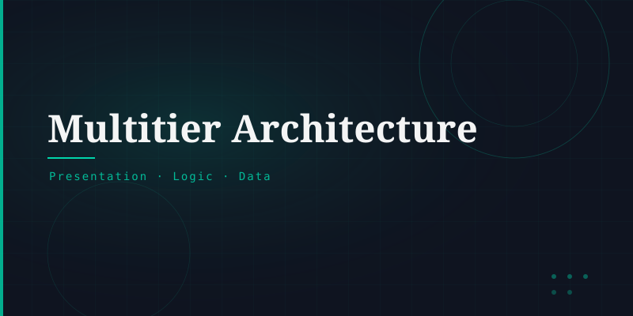

What is Multitier Architecture?
Multitier architecture (also called n-tier architecture) is a client-server design where an application's components are separated into distinct tiers. Each tier is responsible for a specific concern and communicates only with adjacent tiers.
The most common form is the 3-tier architecture: Presentation → Application → Data.
The Three Tiers
The user interface layer — what users see in their browser. Built with HTML, CSS, and JavaScript.
The business logic layer — processes data, applies rules, handles requests. Built with Python, Java, PHP, Node.js, etc.
The database layer — stores and retrieves persistent data. Uses SQL or NoSQL databases.
Why Separate Tiers?
Each tier can be scaled independently · Teams can work on different tiers simultaneously · Security: databases are never directly exposed to users · Easier maintenance and updates · Reusability of logic across multiple front-ends (web, mobile, API).
Beyond 3 Tiers
Large-scale systems may add more tiers: caching layers (Redis, Memcached), CDN layers, microservice layers, and message queues. Cloud-native applications often decompose the application tier further into dozens of independent microservices.